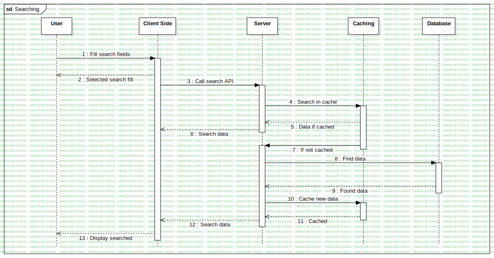

Interaction1
UMLInteraction
Football field website
::
Searching Sequence
::
Interaction1
Description
none
Diagrams

Searching
Participants
User
Client Side
Server
Database
Caching
Messages
Fill search fields (User→Client Side)
Selected search fill (Client Side→User)
Call search API (Client Side→Server)
Search in cache (Server→Caching)
Data if cached (Caching→Server)
Search data (Server→Client Side)
If not cached (Caching→Server)
Find data (Server→Database)
Found data (Database→Server)
Cache new data (Server→Caching)
Cached (Caching→Server)
Search data (Server→Client Side)
Display searched (Client Side→User)
Properties
Name
Value
name
Interaction1
stereotype
null
visibility
public
isReentrant
true
Owned Elements
Searching